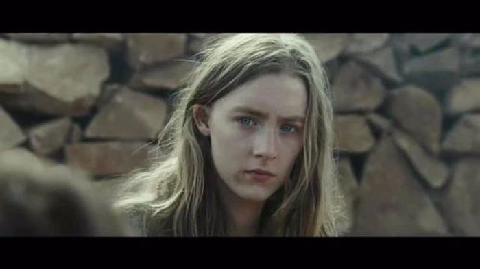

已开学
离开学，已过去50来天了，我很庆幸现在的我还能以开学作为一个始点来计算日期的长短。对学生这个身份，想着要带一辈子就好，人类几千年的文化更替，都没有遗失“学生”，是有所道理的。
近日来，我慢慢放下了一点脚步，细细回想时，才发现这段日子里，我过的有多么的急促。
正如上次所说，要尝试着6点起床，虽说就坚持了几天，我知道这并不是什么易事，多年来的睡觉习惯，一时半会改变不了，是正常的。
不过，下次想要6点起床便容易很多了，我始终难以忘记，清晨6点的操场，阳光刚刚好，不刺眼也能暖洋洋，零零散散大概有着六，七人，有跑步者，有读英语者。平时拥挤的操场，现在每人独占一大片地方，无需担心会撞到别人，也没有了杂人扰乱视线，真是快哉。
于是乎，明天又准备改一改闹钟了。
易忘记
另外，最近感觉任何学习不加以输出，便已忘记。
我拿出我大一时的笔记本，是的，大一过后，已有一年半之久没有拿过纸质的本子进行记录与整理了。
翻开时，本子上用铅笔记录的，正是大一打坐时所想的种种。仔细看了看，真是幼稚呀，写的都是些啥。好在现在的我去看，知道其幼稚可笑，也是有所进步了。
不过，那个行为的冲动还是令人满意的，当然是不想让其丢失的。我找本子出来，也是想着要去寻回，一个懵懂无知的少年，对未知领域渴望的那份冲动。
每天吸收着大量信息，貌似了解整个世界，貌似学习了不少东西，但没有经过系统的学习，终究只是皮毛。也要把自己放在一本本书的学习上了，给自己定个小计划，当然，我也希望有空的时候，能看个一两本杂文集，
想学的东西依旧很多，有趣的事情也有很多，比起很多人，我算不上勤奋，也没有天赋，就这样，在自己想有所成就的领域里，也没有多大的反响，但好歹自己是意识到了这点，还能调整调整。
可调整是需要时间的推移，这样想来，什么都与时间有关，时间其实只是人类想的一个词汇，用来解释生命而已，如果没有人类，也没时间可言，
而现在时间往往被人们赋予太多，
比如，我20多岁了，就该去成家立业，30来岁了就该有所成就，40就会不惑，50而知天命。
可你们又有谁知道自己的生命长短呢，也许别人是后起之秀，也许我们并需要给自己的人生去规划太多，随心而流。
我朝九晚五的工作，可我最好的工作时间是在凌晨。未来会怎样，我并不知，但我越来越喜欢自由职业者了。
我爱摄影，并不是要当个摄影师，我爱写文章，也并不是要当个作者，这两者，一个图像，一个文字，是最好的记录者，我用他们进行创作，去折射出自己的一些想法，这些无关金钱，无关值不值得，就纯粹想做，大概是想证明下时间的纬度，它还存在着。
我靠着我的工作去养活社会，也靠着我的兴趣养活自己，在我看来，这些时间就这样被证明了，通过摄影与文字，这些个性化的创作，是最独一无二的，每个人都有着自己独特的生活。
记得坐车时，我试图去想着，这车它在倒着走，也想让时间倒着走，但毫无可能。
如果人可以永久的活着，那么便不存在时间，人们并不会去关心过了多久，反正后面是无限存在，那如果人们又不知道自己可以活多久呢，效果是一样的吗？是人们时刻提心吊胆的认为自己活不过明天，还是人们对于这个不确定因素也表示无所谓了。
有时候，我就在想人这一辈子，该干些什么事情，就这样一步步走过来？
毕业后，找个工作，存钱买房买车，然后娶个媳妇，生个小孩，好好工作，养家，等等。我现在才20岁，貌似就看到了以后的生活，但仔细想想，这些确实是必做之事，而且也无须去摆脱，因为我们其实还有大量的时间，可以去做想做之事。
这样想来我一直只是在关心时间本身，却没有去利用时间。不用便没有了时间。我们被太多东西束缚着，时间便是最大的一个。每天24小时的来回，事情很多时，才感觉到时间的珍贵，把一件件事情安排好时，才体现出时间的价值，
依旧那样，在工作之余，喝杯小酒，不大醉；看会电影，不沉迷；阅本小说，不逃离；散会儿步，不疲倦；将来呢，就不管了，也管不着。
比起几年前的想着创业，盲目去想着改变世界。现在的我，更成熟点了。以前总以为成熟后，就没有了那种生活的激情了，但并不是，人碰到了自己喜欢的人，自己喜欢的生活，就不会无趣下去。
话至于此，当我们再回看下，就可知道，原来前几年的预测，现在慢慢在变成事实，一年又一年的年度混剪，证明着时间的存在。
这便是改变，随着时间而改变的，而不是时间让其改变。可能变好，可能变坏，人们总是说时代在进步，从各方面来看，确实在进步了。但我一向认为，各个时代有各自的好，不能鲁莽的说，这个时代比上个时代好，哪怕是动乱的战争年代，哪怕是文革年代。
最后，我看了下时间，原来已经2018年了，提醒下大家，今天4月26号，离4月27号只剩下12个小时了。